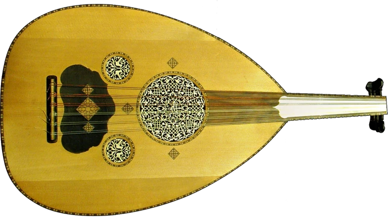

جایی برای تمرین
تمرین شنیداری و کوک منظم برای دسته بدون پرده اهمیت دارد. از ابتدا به تعادل ساز توجه کن تا شانهها فشار اضافی نگیرند.
گرمای چوب و عمق صدا
عود سازی زهی با کاسه گلابیشکل و دسته کوتاه است که معمولاً با مضراب نواخته میشود. در بیشتر گونههای رایج، دسته بدون پرده است و سیمها در گروههای جفتی قرار میگیرند؛ تعداد سیم و کوک با نوع ساز فرق میکند.

طنین گرم، صدای نسبتاً بم و انعطاف در جای نتها از ویژگیهای شنیداری عود است. مدل ساز و شیوه مضرابزدن رنگ صدا را تغییر میدهند.
انتخاب ساز از علاقه و تجربه آغاز میشود. برای تصمیم نهایی، ساز را از نزدیک امتحان کن و با مدرس دربارهٔ شرایط تمرینت حرف بزن.
ترتیب و سرعت آموزش با تجربه، تمرین و برنامهٔ استاد تنظیم میشود.
تمرین شنیداری و کوک منظم برای دسته بدون پرده اهمیت دارد. از ابتدا به تعادل ساز توجه کن تا شانهها فشار اضافی نگیرند.
اندازه کاسه، طول سیم، کوک هدف و سلامت صفحه و دسته را با استاد بررسی کن. نام عود بهتنهایی نوع و کوک مناسب کلاس را تعیین نمیکند.
پیش از خرید ساز، نظر استاد را بپرس.امکان چندصدایی وجود دارد، اما شیوه یادگیری و کاربرد عود را نباید با گیتار یکی فرض کرد.
نه؛ جای نتها با راهنمایی، تمرین گوش و تکرار شکل میگیرد.
با هزارآوا علاقههایت را مرور کن و تجربهٔ ریتم و شنوایی را امتحان کن.
آشنایی با هزارآوا ✦عکس: Faxanadoo · تصویر اصلی · CC BY-SA 4.0 · نسخهٔ بهینهشده و بدون پسزمینه.